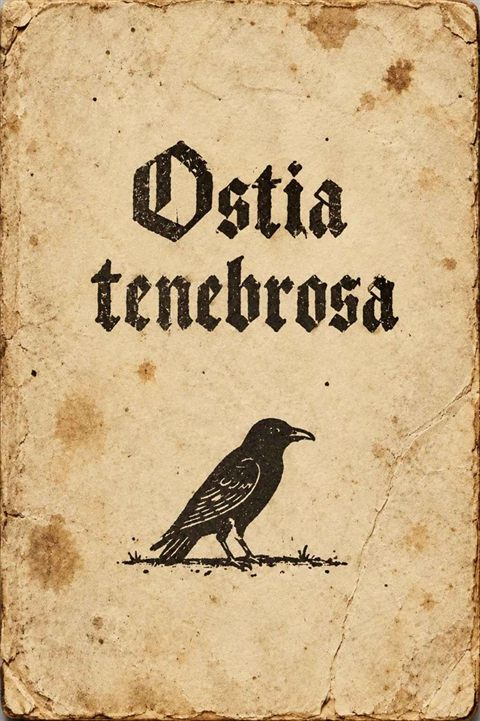

2026
Ostia Tenebrosa: A Tractate on Will
In November 1516, a house near the Market Square in Mainz was broken open after its master had disappeared. On the table lay a manuscript; on the floor, nine engraved sheets arranged in a square. Two theologians condemned the text as blasphemous. The Inquisitor ordered it burned but first had a copy made.
This is that copy.
Ostia tenebrosa is a tractate on the will, written from the darkness against which the preachers warned. Its eleven chapters lead through temptation, blackness, the white desert where Nobody walks, the birth of a Name, encounters with other wills, the descent into hell, and an ascent without a summit.
Its teachings unfold through paradoxes and strange accounts: a pig tried for murder, an exorcist who hears his forgotten name, a guard who asks the judges to punish his dice. Between the chapters, nine figures reveal fragments of the vanished author's life — a wine merchant's son who squandered his inheritance and met someone beside the Rhine.
The book offers a path that cannot be followed by obedience.
Main links